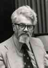

 This collection of tributes and messages to John McCarthy is to celebrate his 80th birthday. To contribute, please email rsm@ucl.ac.uk or eyal@uiuc.edu. Contributions can be as long as a few paragraphs or as short as a sentence or two. We will accept contributions from anyone at any time.
Meeting John McCarthy changed my life, and I owe him many thanks, for many reasons.
I first 'met' John before I met him, when I read his Stanford AI Memo #1 in the library of the Machine Intelligence Unit in Edinburgh, and had my mind blown. When he came to Edinburgh the following year I begged for a chance for a lowly graduate student to ask him some questions, and was grudgingly allotted 30 precious minutes. In order not to waste time I had written my questions out on a sheet of paper, which after the first two questions John snatched from my hands and read in silence, then suggested I come to SAIL for a while: his first act of generosity. I made it, with my young and impoverished family, a year later, and was immediately immersed in a mind-bending series of meetings - his second act of generosity - which eventually produced what has become a classic paper. Making me co-author of this paper was his third, and inviting me back to Stanford again, the third time for a life-changing year at the CASBS, were his fourth and fifth. I have long since lost count of what I owe him, as I suspect has John. I cannot possibly repay him, but I am glad to have this chance to put my gratitude, affection and respect into the historical record.
Pat Hayes
No-one has done more than John McCarthy to build both the tools (such as Lisp) and the intellectual foundations (in particular the logical approach to knowledge representation and reasoning) that have shaped AI and moved the field forward over the last half-century. I was personally inspired from the outset by the boldness of his vision, his unerring capacity for identifying key challenges, the brilliance of his technical approaches to these challenges, and his unwavering commitment to "strong AI" and the commonsense reasoning challenge, even at times when much of the field seemed to have set aside its more visionary goals. I'm enormously pleased that John McCarthy in his 80th year is still shaping the field and sustaining its grandest ambitions, and I hope for many more years of inspiration and leadership from him.
Len Schubert (University of Rochester)
Dear John,
Your vision of what AI is or should be about has been a powerful intellectual beacon over the years. I felt its influence even in the far north of The Netherlands around 1980 when my students brought your circumscription paper to our logic colloquium, and demanded that we should study this. At closer range, we have interacted over many years at Stanford now, and it has been a privilege entering 'McCarthy's World' and its inhabitants, getting to know your students, all of them bright and colorful personalities like their teacher. Of course, we have not always interacted enough, and the gap between situation calculus and circumscription with my world of modal and dynamic logic is much larger than it should have been. But good topics will keep.
It has also been a great pleasure having you as an author in our forthcoming Handbook of the Philosophy of Information. Encounters have ranged from frank meetings with Stanford philosophers to fashionable crowd gatherings in the high- income canal zone of Amsterdam. Your vision on common sense, information, context, reasoning, and the broader purpose of AI, is as alive as ever in that Handbook chapter.
These days, the McCarthy perspective on logical AI and common sense reasoning sometimes seems dimmed by the mists of fashion and the joys of application of mere AI 'techniques' in the world of fortune and fame. But I am confident that this fundamental vision will survive, and inspire many people the world over, in the future as much as in the past.
Congratulations with your 80th anniversary,
Johan van Benthem
To John - forever creative, forever intellectually honest, forever young.
Yoav Shoham
John:
I'm delighted that this symposium is being dedicated to you. I don't know about the other attendees, but your thoughts have shaped the course of my own research more than anyone else.
A very Happy Birthday to you!
Hector Levesque
John, Congratulations and best wishes on your 80th birthday, and thank you for blazing the trail it has been so enjoyable and rewarding to follow.
Stu Shapiro
Dear John,
Thank you for everything and happy 80th birthday!
With all my best wishes,
Fangzhen Lin
Congratulations, John! You inspired me to dream of the future in AI and have always helped me keep the big picture in mind. I am always grateful for your help and encouragement like the time you paid a personal visit to my office at IBM to support my work on the Mr. Hug example. I'm still working on the Mr. Hug example!
Erik T. Mueller
John McCarthy has been instrumental in shaping Computer Science and, specifically, AI from the beginnings to what we know today. I am honored to have met him. He is a Founder Father.
Not to date myself too much, but... when I was a student the LISP 1.5 Programmer's Manual that John co-authored was a state-of-the-art text in one of my required courses. This got me to 'think in lists', enabling me to work on a list processing research techniques project that funded some of my education. We grad students read the seminal article, 'A Basis for a Mathematical Theory of Computation'; it was part of the literature in those days that got me to 'think in theory'. Later, Ruzena Bajcsy (who'd been a PhD student of John's at Stanford) began to teach at Penn and I came over from my College Hall job to sit in on her course, staying up-to-date so I could 'think in AI'. But throughout all those early years when John's work and influence had such relevance to my education and the evolution of my thinking, I never expected to actually meet him or even be in the same room with him!
Time progressed; I began my research program in inference processes and their applications; and eventually I found myself in symposia where John was a frequent visitor, participant and organizer. It was easy to tell when he liked what he was hearing from a speaker and when he did not. I was duly impressed; in fact, I was in awe. I decided I'd sure want his approval of anything I might say!
But in recent years I have been looking at problems that emphasize distinctions between human-level intelligence and the intelligence level achievable by machines. Now John's work has gotten me to 'think in a commonsense reasoning way', far more intensely than I ever did before. I suppose that if I were to present my opinions on matters of commonsense reasoning, or the likelihood of machines achieving human-level intelligence, John would disagree. And I almost hope that in any ensuing debate, he'd be right and I'd be wrong. I want him to win; I truly want him to see the AI achievements that he has always hoped to see.
For the research he has initiated and inspired, for his perseverance and constant striving, John McCarthy is awesome. But the greatest tribute I can pay to him is my gratitude for how deeply and seriously he has made me think.
Leona F. Fass
Carmel-by-the-Sea California
January 22, 2007
Dear John,
I am very sorry I won't be at this symposium, especially as I have learnt so much from your writings since I first encountered AI around 1969, and in a sense I owe my first ever AI publication to you (and Pat Hayes). I had been reading some of your papers presenting the logicist approach to AI and when I read this paper
J. McCarthy, P.J. Hayes, 1969,
Some philosophical problems from the standpoint of AI,
Machine Intelligence 4, Eds. B. Meltzer and D. Michie,
Edinburgh:
Edinburgh University Press,
http://www-formal.stanford.edu/jmc/mcchay69/mcchay69.html
its strong claims provoked me into writing a paper presented at IJCAI 1971, subsequently reprinted in the AI Journal and a couple of other places.
I argued that despite the power and usefulness of logic (and more generally Fregean representations, built on the function/argument structure) that was not sufficient for the purposes of an intelligent system; and suggested that other forms of representation were needed, including (among other things) what I called 'analogical' representations (in which properties of and relations between parts represent properties of and relations between things represented, though they need not be isomorphic with what they represent, since e.g. a 2-D picture can represent a 3-D object despite being far from isomorphic with it). I also argued that the notion of a 'valid inference' had to be extended to include inferences represented by manipulations of spatial representations.
We first started talking at that conference, though I can't recall what you said then! Later you kindly invited me to spend a month in Stanford during 1981, the year in which you had Sloan foundation funds to bring philosophers and AI researchers together. Thereafter, I met you from time to time at conferences and during visits to Stanford, always finding our conversations interesting and rewarding. I've also continued to learn much from your writings (even when I did not agree with everything).
In particular I urge people to look at an unpublished paper on your website
'The well designed child',
http://www-formal.stanford.edu/jmc/child1.html
It should especially be read by all those AI researchers working on learning, who need to be reminded that
"Evolution solved a different problem than that of starting a baby
with no a priori assumptions."
(http://www-formal.stanford.edu/jmc/child/node2.html)
"the world is not structured in terms of human input-output
relations"
"Animal behavior, including human intelligence, evolved to survive
and succeed in this complex, partially observable and very slightly
controllable world. The main features of this world have existed
for several billion years and should not have to be learned anew
by each person or animal."
(http://www-formal.stanford.edu/jmc/child/node3.html)
Let's hope the next 50 years of AI research will be more strongly influenced than the last 50 years by that viewpoint, and the implication that in order to design human-like robots we need a deep understanding of the structure of the world that shaped our evolution, including the evolution of our potential to use logic!
Best wishes.
Aaron Sloman
John,
I came MIT in 1957 part because you were there. You helped make my world as a graduate student exciting, with your ideas, energy and thought-provoking discussions. You have done the same for the world of Artificial Intelligence and computing ever since. I thank you for both.
Very Happy Birthday.
Warmly
Danny Bobrow
John is amazing bringing awareness to every one; not only in AI matters, but in the way he faces life, with a deep sense of adventure and enterprise, and also in his ability to get older still fresh in his mind like a child. He does not publish papers, he just writes on his website injecting life through this umbilical cord to which we are all attached.
Once we were on a boat he fall in the water and he was almost drowning, I thought "God, is the father of AI who is drowning" despite he is twice me I had to do something, I do not know how I did it, but I got to drag him on the shore, and also I survived. This is part of many amazing good memories: happy birthday John!!
Fiora Pirri
John,
Thank you not only for inspiring me, but also for inspiring the people who inspired me, and inspiring the people who inspired the people who inspired me.
Rob Miller
Happy 80th birthday John! You're a great teacher and an inspiring force, and not just in the realm of AI and CS but life in general. Because of you I will always buy my milk at Safeway!
Aarati Parmar Martino
I was a graduate student of John's between 1967 and 1972. I owe great deal to John who stood by me and trusted me even when I failed my first exam. His influence on my work has been equally great. He stressed the importance of representation in AI which is still the open question. I am very proud that he was my advisor, and wish him many more healthy and productive years,
Ruzena Bajcsy
Dear John,
Thank you for founding and leading the fields of Artificial Intelligence, knowledge representation, and formal commonsense reasoning; for always inspiring us with your papers, your talks, and your ideas; and for your unparalleled generosity of spirit. May we merit having you with us and listening to your ideas for many more years to come. We need you! My very best wishes for a Happy 80th Birthday, John.
Warmly,
Leora Morgenstern
Dear John,
I studied for my Ph.D. with you, so this already makes me one of the lucky few. Still, working with you was not easy. I was quite unhappy to show that I don't know things, and many times I didn't know that I didn't know. I'm also quite stubborn, so that made for very few agreements and work together. Still, I don't think I ever had a chance to tell you how lucky I felt. And it was not because you brought me to Stanford, and not because you were the great figure that you are, who created and led a field for many years, and it is not because you gave me your trust (and allowed me to drive your new BMW to look for housing)! It is because I truly believed in what you created even before I knew that you created it or that it existed. It is because you are one of the few with whom I could say "yes, that's how I feel it should be done" (not only research). It is because you gave me a hero. I am sorry we never wrote a paper together, but I now know why that is. I had (still have) much more respect for you than I could admit to myself, and I had to take a distance to be more independent and creative. It also does not help that you are probably the only person who is more stubborn than me!
With so much love and wishes for many years of happiness and interesting conversations,
Eyal Amir
Hi John,
Many happy returns on your 80th Birthday in 2007!
You are a pioneer and legend in Computer Science and an International Treasure. Your quest for innovation and a new understanding of the human mind has lead to extraordinary scientific developments, and transformed many peoples lives. Your creativity, bold steps and amazing achievements arouse scientific curiosity.Your ideas have been adopted globally, inspired several generations of researchers, and been used in applications beyond the bounds of your home, planet Earth, having found a place in the deployment of intelligent machines in outer space and now roving on other planets.
You are an extreme optimist with an infectious and insightful understanding which sparks creativity in others. You not only stir people to do great things, you impel them. Your leadership and vision is exemplified in the advances in field of Artificial Intelligence over the last 50 years, just one area of human endeavor in which you have made significant contributions.
I, like many others, feel lucky to have had the opportunity to know you. I always enjoy working with you. Its exciting and fun because you are a great teacher, and as a result I always learn new ideas, new approaches to problem solving, and new ways of conceiving of the future. Your insights always challenge, and your love and enthusiasm for scientific advancement always inspires. We are all richer for the gifts you have shared with us, and we all look forward to many more fun and fruitful discussions.
Muchibus thankibus!
Mary-Anne Williams
Dear John,
Many thanks for inspiring our research all these years. Your ideas are still fresh and stimulating.
Tony (Antonis) Kakas
Dear John,
Many many thanks for having been such a good friend to Logic in AI for many decades. Some of the earliest work in reasoning about knowledge was done under your guidance, before there was that fashionable wave in the mid-80's. And of course non-monotonic reasoning would not exist without you.
Congratulations on your 80'th birthday.
Best regards,
Rohit Parikh
Dear John,
During my early days at SRI in the 1960s I thought of you as an awesomely towering figure. (Actually, I still do!) I recall your visit to SRI when we showed you our newly built, character-recognizing neural net. And I remember a visit to SAIL on Arastradero Rd when you asked me how I would solve a three-disc Tower of Hanoi problem. I guess I thought I was being tested, but now I believe you were just conducting an experiment to see if I would happen to think of the recursive solution. Anyway, I ended up following in your footsteps --- pursuing a logical approach to AI --- but always many steps behind --- hop-scotching along through the situation calculus, circumscription, contexts, elaboration tolerance, human-level AI. Your insights about what AI needed to achieve human-level-AI have always been an inspiration, and I marvel at how you happened to come up with them. I count myself fortunate to be one of your colleagues!
Warmest wishes on this happy occasion!
Nils Nilsson
I owe a great deal to John. In the 1990s he twice generously invited me to spend time at Stanford to work with him, and it was during that time that I did much of the work on which I built my subsequent career. Meetings with John and his students were unforgetable. John had (and has) an uncanny ability to throw up counter-examples to proposals for tackling problems in common sense reasoning that reveal just how narrow one's own thinking is. (Often these counter-examples are also very funny.) His influence on me has, I feel, been on two very different levels. First, and most obviously, his fundamental work on logic-based AI was the basis of much of my work in the field. Second - and perhaps even more importantly - his ability constantly to challenge accepted viewpoints and to "think outside the box" should be a lesson to us all. We shouldn't forget that, when it comes to AI, and indeed much of computer science, John had already invented most of the boxes, thought inside them, and thought outside them, before many of us were born. And if you have ever had the privilege of "hanging out" with him for a while, you might have had the sense that this visionary outlook is somehow inherent in his personality. If just a little of that has rubbed off on me then I count myself very lucky to have had the chance to meet and to get to know John McCarthy.
Murray Shanahan
John,
We are all in your debt. You established a firm foundation for the science and practice of artificial intelligence. Thank you.
Alan Mackworth
Dear John,
All of us in AI are grateful for your insights and efforts in making AI a viable field of study. But I have a lot to thank you for personally besides wishing you a very happy birthday.
You had done the work of starting the AI Lab at Stanford and hiring excellent people. The environment there was unbelievably rich and many of us did not properly appreciate how much administrative effort was required to make it so. Thank you.
Your Scientific American book, based on the September, 1966 issue, came out just as I was arriving at Stanford to work on Dendral at the AI Lab. In writing about people gaining greater self-understanding and self-reliance by learning to program, you spoke directly to me in your ending, "Some people will enjoy this experience more than others."
Your earlier paper "Programs with Common Sense" is the cornerstone for five decades of work, which I read as part of my initiation into AI (and assigned to every class I later taught). Our conversations about Mycin's common sense were always provocative. For example, you once told Mycin that a male patient had undergone amniocentesis, which Mycin accepted. Your focusing on these lapses forced us to realize that Mycin depended on users who, themselves, had common sense.
So, thank you for many years of leadership in the field and all you've written and said that shaped the thinking and career directions of so many in the field, including myself. May your influence continue to spread.
With my best regards and deepest respect,
Bruce Buchanan
Dear John,
A very Happy Birthday to you. I've became really interested in AI after taking your summer class at Stanford more than twenty years ago. Your work has greatly influenced me ever since. Thank you for that, and for creating so many wonderful ideas in Logic, Computer Science, and AI, and for the pleasure of reading and re-reading your papers and listening to your comments.
Very very best wishes,
Michael Gelfond
From the time I was an undergraduate studying AI, then as a PhD student of Pat Hayes, and subsequently as researcher interested in commonsense reasoning, I've always been inspired by, and tremendously appreciative of your huge and continuing contribution to the field. Many happy returns on your 80th birthday.
Tony Cohn
Dear John,
A few days in 1983, when I learned from your lectures about the situation calculus and nonmonotonic reasoning, have changed my life. Thank you, and happy birthday!
Vladimir Lifschitz
Dear John,
I have been greatly influenced, both directly and indirectly (via my Ph.D advisor, Vladimir Lifschitz) by your work in logic, situation calculus and circumscription. Thank you and have a very happy 80th birthday!
Neelakantan Kartha
"Considerate la vostra semenza:
fatti non foste a viver come bruti,
ma per seguir virtute e canoscenza"
"Call to mind from whence we sprang:
Ye were not form'd to live the life of brutes
But virtue to pursue and knowledge high."
Dante Alighieri, "La Divina Commedia", Inferno, Canto XXVI
I often meditate about the words that Dante Alighieri imagined the greek hero Ulisse did pronounce. I do that especially in hard times, when I need to retrieve my strength and resources.
I believe that John McCarty has higly honoured Ulisse's ideals which, to me, means he has highly honoured the highest and nobler ideals of mankind.
Stefania Costantini
Dear John,
I count myself lucky to be among so many people inspired by your life and your work. It isn't easy, when you have done so much already, to try to follow in your footsteps. But thank you for showing the way.
Best wishes,
Bob Kowalski
Dear John,
According to Rob Miller's recursive model of your influence, I belong to the second and third level, but during the short time I've been in your company, your deep insight and personal generosity have been clear. Happy 80th birthday.
Jeremy Forth
Dear John,
Your influence and contributions to AI and computer science is world renowned. You are one of those who started the field of AI. Your papers on commonsense reasoning, the situation calculus and circumscription are classics and have spurred work in robotics, nonmonotonic reasoning, and more broadly logic-based AI.. I thank you for asking me to organize a workshop with you on logic-based AI in 1998. It demonstrated the enduring influence you had and still have on logic-based AI.
You are not only a treasure as a scientist, but you have made major contributions in the fight for human rights of scientists. Together with Eric Sandewall and Patrick Winston, you assured that IJCAI -4, held in Tbilisi in 1975, met international standards; you wrote to governments that were violating the human rights of scientists; and lent your support in many other ways. You did all of this with commonsense, intelligence, and little fan fare. I am personally indebted to you for your support in these efforts.
At the ripe age of 80, the AI community still looks forward to many more years of your leadership. As they say in Yiddish, `Zolst leben biz a hundert und tvantzig. (May you live until 120)'
With admiration and appreciation to a great scientist, a humanitarian, and a friend who has influenced my career, and best wishes for a Happy 80th Birthday,
Jack Minker
Dear John,
Your ground-breaking work on AI, your clever and creative mind, and
your generous spirit have greatly inspired me as a researcher and a
teacher. I greatly value your friendship. Happy Birthday, dear John.
Sheila McIlraith
Dear John,
With my own logic background I always have regarded you as the true leader of the field of Artificial Intelligence. Under my view there are convincing arguments for this judgment. I mention just three.
1. Your visions were always far ahead of the times and yet realistic ones. To mention just one out of numerous instances, in a recent paper I quoted the following passage from your Symbol Manipulating Language Memo 14 in 1959: "[The Wang algorithm for propositional logic] took about two hours to write the program and it ran on the fourth try." Because of your vision concerning the way of programming you realized LISP in those early years and with it we all could enter a new area of AI programming, reducing the time needed for programming by orders of magnitude.
2. You have always seen AI in a very broad and historic perspective, much broader actually than most AI researchers today see their field (for which reason I keep talking of Intellectics as the union of today's AI with CogSci). And on the basis of this perspective you have remained convinced of the central importance of logic for Intellectics in this broad sense.
3. A leader carries charisma. You have ample of it. Any meeting with you, for instance your visit in my family's house in Munich in the eighties, turned out to a special and memorable event in my life. One should also mention your helpfulness, for instance by writing letters to potential employers (mostly very short and handwritten, but weighty ones) for probably numerous people in the field including myself.
We all are grateful to you for what you did for the field, for us and for what you mean to us.
Yours ever,
Wolfgang Bibel (Darmstadt University of Technology)